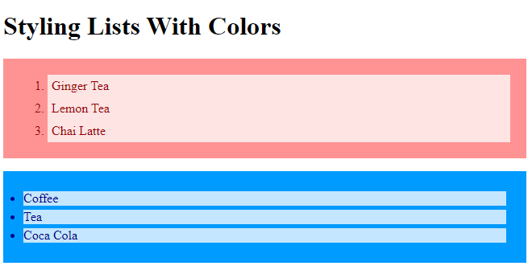
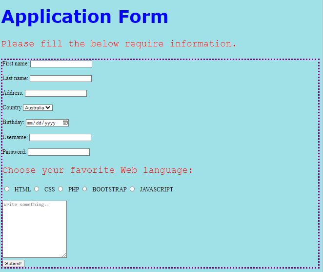
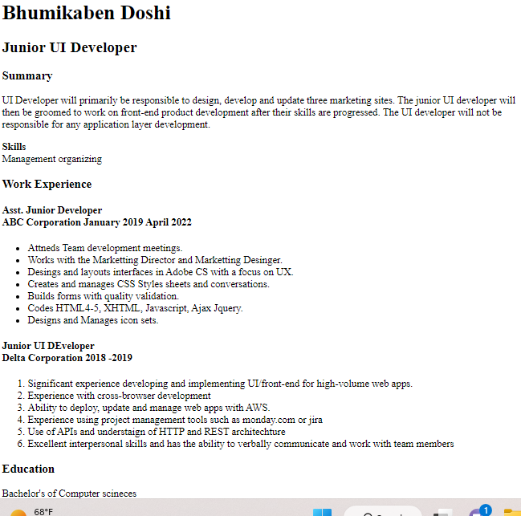

Here I have a few examples of my work. I shared here bit descriptions of some assignments and attached screenshots. Clicking on the screenshot will take you to the live web pages for you to see each page in action.
| List: This web page I did with a list with bit style and colors. I utilized here style element and ul and ol elements to create lists. |
 |
| Application Form: I created an application form using HTML and CSS styles.I enjoyed it while I was working on this application.
|
 |
| My Resume: I created my resume page, but I yet to finish with CSS style and other information. |
 |
|